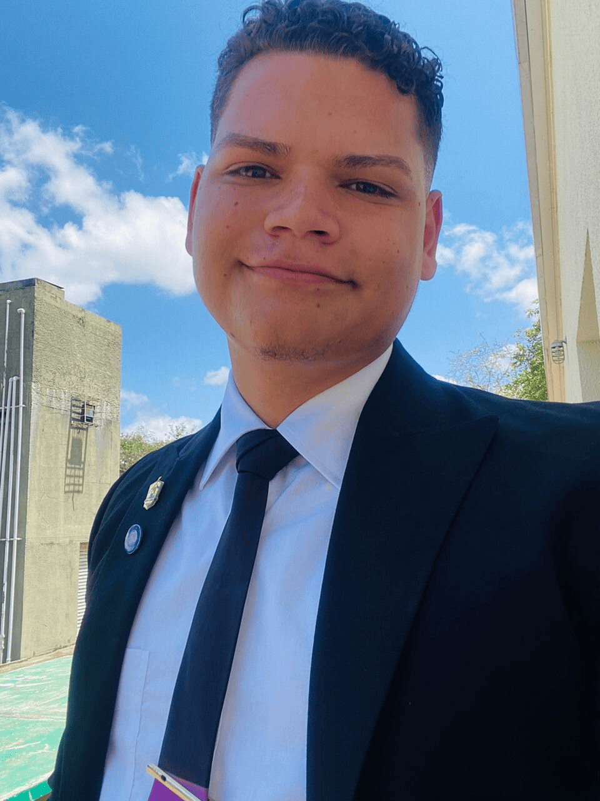

Marcos Macho | WDD130
Hello everyone! My name is Marcos Macho and I am from Puerto Cumarebo, Venezuela. I have been learning about programming, especially Python, and I would like to delve deeper into web development. About me, I live with my parents and I have two younger brothers. I have lived in Venezuela all my life, so my native language is Spanish, but I also like English, which I have been learning for a year. As for my interests, I enjoy music, I like movies and series, I love reading books, and I am passionate about graphic design.
In addition to my already mentioned interests, I have a great curiosity about how technology can improve our lives. I am fascinated by how programming can solve complex problems and create innovative solutions. In my spare time, I like to experiment with different programming projects, from small scripts to more complex applications. I also enjoy working on open source projects, which allows me to learn from other developers and contribute to the community.
The culture of my country is rich and diverse, and it inspires me to incorporate elements of it into my projects. I believe that the unique perspective I have as a Venezuelan can bring a special touch to the world of web development. I am also committed to improving my English language skills, as this will not only give me access to a greater number of learning resources, but will also help me communicate with people from all over the world.
Finally, I believe that balance between personal and professional life is key. Therefore, when I am not programming, I enjoy spending time with my family and friends, exploring nature, and participating in community activities. These experiences keep me motivated and are a constant source of inspiration for my creative and technical work.